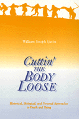

<body bgcolor="#FFFFFF" text="#000000" link="#0000FF" vlink="#CC0000" alink="#CC0000"><center><hr width="350" size="1" align="center" noshade>An exploration of the practical and philosophical questions surrounding death and dying<hr width="350" size="1" align="center" noshade><p><a href="https://cdcshoppingcart.uchicago.edu/Cart/ChicagoBook.aspx?ISBN=9781566392976&&PRESS=temple" target="_top">Buy this book!</a> | <a href="https://cdcshoppingcart.uchicago.edu/Cart/Cart.aspx?PRESS=temple" target="_top">View Cart</a> | <a href="https://cdcshoppingcart.uchicago.edu/Cart/Cart.aspx?PRESS=temple" target="_top">Check Out</a></p><p></p></center><!--none//--><h1>Cuttin' the Body Loose</h1>
<H2>Historical, Biological, and Personal Approaches to Death and Dying</H2>
<h3>William Joseph Gavin</h3>
<P>cloth 1-56639-297-7 $69.95, May 95, <FONT COLOR=#990033>Out of Stock Unavailable</FONT>
<br>paper 1-56639-298-5 $26.95, Apr 95, <FONT COLOR=#990033>Out of Stock Unavailable</FONT>
<BR> 256 pp
5.5x8.25
</P><BLOCKQUOTE><I>"</I>Cuttin' the Body Loose<i> is a learned and thoughtful book, one that probes an intractable issue and refuses to be satisfied with pat solutions. Gavin is sensitive to cultural differences, to the social construction of ideas, to context, to uncertainty, and to a pluralistic approach to death and dying. This thoroughly readable book occasions the reader to reflect on a great set of human problems in a sensitive and constructive fashion." </I>
<br>&#151<b>John Lachs</b>, Vanderbilt University<I></I></BLOCKQUOTE>
<p>All too often, studies of death are reduced to a series of legal or medical case studies, which ignore the need to provide a personal and a societal context. <I>Cuttin' the Body Loose</I> explores the practical and philosophical questions related to death and dying. Looking at death from the perspective of different cultures and different periods in history, William Joseph Gavin utilizes both Western and Eastern cases and examples from literature, history, philosophy, as well as the news. He argues that even so-called 'biological" definitions of death are socially constructed and that trying to determine a single correct definition masks the important issues of the process of dying.
<p>Gavin's accessible discussion centers on two approaches to death and dying: acceptance and rebellion. He argues that the more one emphasizes the uniqueness of the individual (the concept of self), the more one advocates a model of rebellion. In addition to the concept of self, which varies from culture to culture, Gavin also discusses the complicated integration of both approaches. He concludes that we need to preserve a multi-leveled context for death and dying, one in which each person can choose an appropriate standpoint.
<BR>&nbsp;<h2>Reviews</h2>
<p><I>"William Gavin amply illustrates his thesis that 'no one discipline owns death' by drawing on sources from literature, philosophy, law, social science, and medicine. The result is a rich scholarly blend of arguments and insights that may 'cut the reader loose' from superficial consideration of dying (one's own or others'), evoking recognition of its central significance for the living. Gavin succeeds in presenting this taboo topic thoughtfully, provocatively, and sensitively."</I>
<br>&#151<b>Mary B. Mahowald</b>, Maclean Center for Clinical Medical Ethics, University of Chicago
<p><I>"</I>Cuttin' the Body Loose<I> is interesting and important. William Joseph Gavin's argument shows why approaches to dying as human experience would do well to center on the vague, the uncertain, and those silences and words that extend behind the precision of technical definitions&#151be they medical or legal&#151to the messiness of lives and the complexities of narratives. Dying calls for words. But which words, responding to which experiences, under which needs, for which purposes, by which persons in which contexts? Gavin's book takes us to what is indisputably human in the process of dying: the fact that the very experience itself is historicized and contextual and therefore falls under the genre of irony more than that of the now dominant bioethical tropes."</I>
<br>&#151<b>Arthur Kleinman</b>, Harvard University and Medical School
<BR>&nbsp;<h2>Contents</h2><P>
<p>Preface
<br>Acknowledgments
<p><b>Part I: Historical Contexts</b>
<br>1. Case Studies Conceal as Well as Reveal
<br>2. Historical Contexts in the West
<br>3. A Non-Western Example: Japan
<p><b>Part II: Biological Contexts</b>
<br>4. Science and Medicine
<br>5. Harvard Ad Hoc and Its Critics
<br>6. Ramifications of Jonas's Critique
<p><b>Part III: Personal Contexts</b>
<br>7. Death Versus Dying
<br>8. Three Portraits of Dying: Socrates, Ivan Ilych, Zarathustra
<br>9. Acceptance Versus Denial: The Overall Implication
<p>Conclusion: <I>En Attendant la Mort</I>
<br>Notes
<br>Index
</P><BR>&nbsp;<H2>About the Author(s)</H2>
<P><b>William Joseph Gavin</b> is Professor of Philosophy at the University of Southern Maine. His most recently published book is <I><a href="866_reg.html" target="_top">William James and the Reinstatement of the Vague</a></I> (Temple).</P>
<BR><H2>Subject Categories</H2>
<p><A HREF="/tempress/philosophy.html" TARGET="_top">Philosophy and Ethics</a>
</p>
<p align="center"><a href="https://cdcshoppingcart.uchicago.edu/Cart/ChicagoBook.aspx?ISBN=9781566392976&&PRESS=temple" target="_top">Buy this book!</a> | <a href="https://cdcshoppingcart.uchicago.edu/Cart/Cart.aspx?PRESS=temple" target="_top">View Cart</a> | <a href="https://cdcshoppingcart.uchicago.edu/Cart/Cart.aspx?PRESS=temple" target="_top">Check Out</a></p><p><font face="Arial" size="1"><a href="copyright.html" onMouseOver="window.status='Web Copyright Policy';return true;" onMouseOut="window.status=''" title="Web Copyright Policy">&copy;</a> 2015 <a href="http://www.temple.edu" target="new" onMouseOver="window.status='Link to Temple University home page';return true;" onMouseOut="window.status=''" title="Link to Temple University home page">Temple University</a>. All Rights Reserved. http://www.temple.edu/tempress/titles/980_reg.html</font></p>